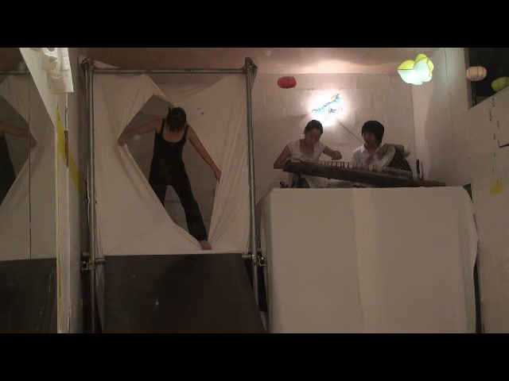

Hyesim Jung & Mijin Kim
A cooperative work

Since we have moved in the Seoksu Market we want to work together using sound of Gayaguem(twelve strings Korean harp) and medium of performace. The participation in the Seoksu Art Project 2009 gab us a chance to collaborate. In our cooperative performance, we will descrive human desire without any words, but will show it with music and movements. Besides us, other artists in our performance.
석수시장에 입주했을 때부터 우리는 가야금 소리와 연극매체를 사용하여 함께 작업해보길 원했고, 2009 석수아트프로젝트에 참여하면서 공동작업을 하게되었다. 이번에 기획된 공동작업에서 우리는 인간의 욕망을 주제로 이것을 대사가 없는 몸짓과 음악의 언어로 표현하고자 한다. 이번 공동작업을 위해 연출가 박지혜, 퍼포머 김진석, 뮤지션 최성운도 함께 참여했다.
seoksuartproject.blogspot.com 에서 옮김
이름: 김미진 kim mi jin
프로필 (장르: 연극)
연락처:
- 주소: 경기도 안양시 만안구 석수2동
- 전화 010-2041-***5
- 이메일 sialovelove@hanmail.net
- 홈페이지/ 블로그 주소 cyword/com/taijimj
생년월일, 출생지: 198*/**/**
현재 안양에서 거주하며 활동, 극단 진동 ‘성장연극’, 보라매 청소년 ‘연극놀이’수업 강사
학력
2007 러시아 모스크바 슈우킨 연극대학 졸업 / 연기 전공
주요작품
2002/12 베를톨트 브레히트 작 - 사천의 선인 ‘센테 역’
2007/04 안톤체홉 작 - 바냐 아저씨 ‘쏘냐 역’
2007/04 A.볼로진 - 도마뱀 ‘시어머니 역’
2008/05 레프 톨스토이 - 어둠의 힘 ‘마뜨료나 역’
2008/12 창작극 - 씽씽포장마차 ‘ 포장마차 아줌마 역’
외 다수
kim mi jin . Korea
Add: Seoksu 2-dong, Anyang Si Manan-gu, Gyeonggi-Do
Mobile Phone :010-2041-***5
Email Add : sialovelove@hanmail.net
EDUCATION
2007 city of Mscow "Theatre institute under the E.Vakhtangov State Academic
Theatre Company" / Theatre Arts - acting
SELECTED EXHIBITIONS
2002/02 Bertolt Brecht- Der gute Mensch von Setzuan 'CENTE'
2007/04 Anton Pavlovich Chekhov - Uncle Vanya ' sonya'
2008/04 Lev Nikolaevich Tolstoi - The Power of Darkness ' matroyna'
2008/12 a fictive drama Ssing ssing covered cart bar - 'auntie'
2009-08-03
sap2009.egloos.com 에서 옮김